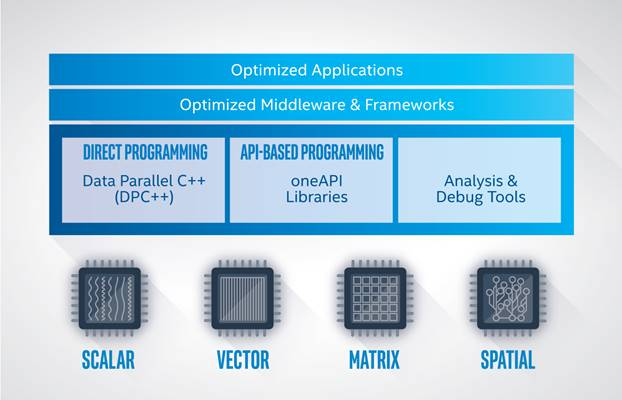

Introduction¶
Obtaining high compute performance on today’s modern computer architectures requires code that is optimized, power efficient, and scalable. The demand for high performance continues to increase due to needs in AI, video analytics, data analytics, as well as in traditional high performance computing (HPC).
Modern workload diversity has resulted in a need for architectural diversity; no single architecture is best for every workload. A mix of scalar, vector, matrix, and spatial (SVMS) architectures deployed in CPU, GPU, AI, and FPGA accelerators is required to extract best performance.
Today, coding for CPUs and accelerators requires different languages, libraries, and tools. There is limited application code reusability across different target architectures.
oneAPI is a cross-industry initiative for an open, standards-based unified programming model that creates a common developer experience across compute accelerator architectures. Its objective is to deliver an efficient, performant programming model that eliminates the need for developers to maintain separate code bases, languages, tools, and workflows for each architecture.
Overview¶
oneAPI consists of Data Parallel C++ (DPC++) and a core set of libraries for compute-intensive domains. DPC++ programs accelerate a sequential computation by distributing work across the processing elements in a device. DPC++ uses a data parallel programming model. The data is distributed across a set of processing elements, and each processing element operates on the data in parallel. By using a data parallel programming model, the developer is able to scale the parallelism with the size of the data.
A developer can either use DPC++ to explicitly parallelize an algorithm, or use a parallel implementation from a oneAPI library. oneAPI makes it possible to target CPU, GPU, or FPGA with a single implementation by providing consistent interfaces. However, some devices may not implement all features. Achieving best performance often requires the programmer to tune the code for the target architecture. oneAPI libraries are written to achieve best performance on all supported architectures without end user tuning.
As shown in the figure above, applications that take advantage of the oneAPI programming model can execute on multiple target hardware platforms ranging from CPU to FPGA.
Data Parallel C++ (DPC++)¶
DPC++ is the heart of oneAPI. DPC++ programs are written in ISO C++ and use the Khronos* SYCL* parallel programming model to distribute computation across processing elements in a device. DPC++ extends SYCL with features for performance and productivity.
DPC++ is single source – device and host code can be included in the same source file. A DPC++ compiler generates code for both the host and device. Any C++ compiler can compile programs that only use the host subset of DPC++.
In this guide, it is safe to assume that anything that mentions SYCL is also applicable to DPC++. Anything specific to DPC++ will be explicitly mentioned.
Structure of This Document¶
This document consists of the following sections:
Programming Model describes the high-level concepts for the DPC++ programming model and the execution model that it depends upon.
Interface provides a detailed explanation of the classes that make up the programming model.
How to Use This Document¶
This document is a reference manual for DPC++. It is intended to be the document to consult when you are coding an algorithm in DPC++ and need to understand the detailed functionality, usage of an API, or some other aspect of DPC++.
If you want to learn DPC++, the oneAPI online training is more appropriate. The ultimate sources for DPC++ information are the oneAPI Specification and the SYCL Specification. The specifications are written for implementors of oneAPI elements and SYCL compilers/runtimes. The descriptions are more precise, but may be difficult to understand if you are not already an expert in other aspects of DPC++.